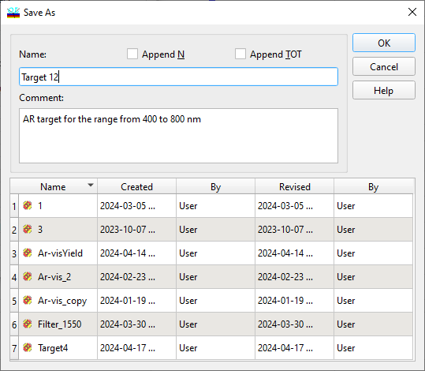
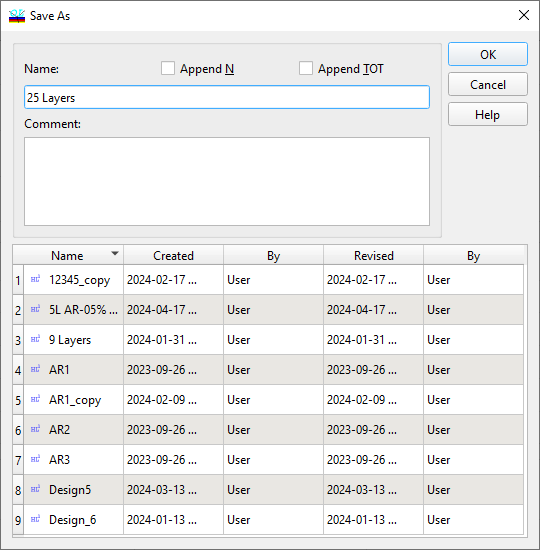

Saving Current Targets and other data
Saving Current Targets and other data
Navigation: OptiLayer Menu Commands > Data Menu > Database Access Dialog >
Saving Current Targets and other data
` <idh_database_new_file.html>`__ ` <idh_modify_database.html>`__ ` <configure_database_columns.html>`__
OptiLayer offers the capability to implement temporary modifications to the Targets and Design currently loaded into the memory. These alterations do not impact the stored versions of these files. To make such changes, you can use the “Modify Target,” “Modify Integral Target,” “Modify Color Target,” “Modify Design,” or “Modify Stack” commands, which are found in the Synthesis Menu).
If you find that these modifications meet your needs and you decide that you want to keep them for future reference or use, you can save the revised versions by selecting the appropriate Save commands from the Data Menu.
When saving a design or target that is resident in memory to the disk for permanent storage, it will be necessary to provide a Name for the new file. Importantly, the name you choose does not have to conform to file naming conventions recognized by Windows. You are free to select any name, including those containing spaces and other characters. An optional Comment field is also available for you to provide additional context or notes about the file. Should you need to change the name and comment of any existing or newly created file, you can do so later using the “Rename” command. To help prevent the creation of files with duplicate names, the “Save Design” and “Save Targets” dialog boxes display all existing designs and targets. This feature assists in maintaining an organized and easily navigable file system within OptiLayer.

Please note that if you attempt to load a new design or target while the one currently in memory has been modified but not saved, you will receive a warning about the risk of losing those unsaved changes. Additionally, when using the “Save Design” command, the “Save Design As” dialog offers additional options. These options enhance the saving process, providing you with further control over how your work is saved.

Append N adds the number of design layers to the design name.
Append MF includes the value of the merit function in the design name.
Append TOT attaches the Total Optical Thickness to the design name.
This information is also captured in the automatically created Comment field.